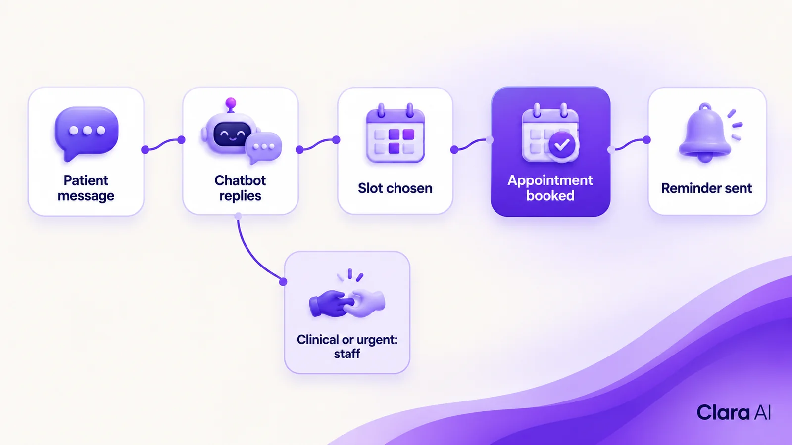
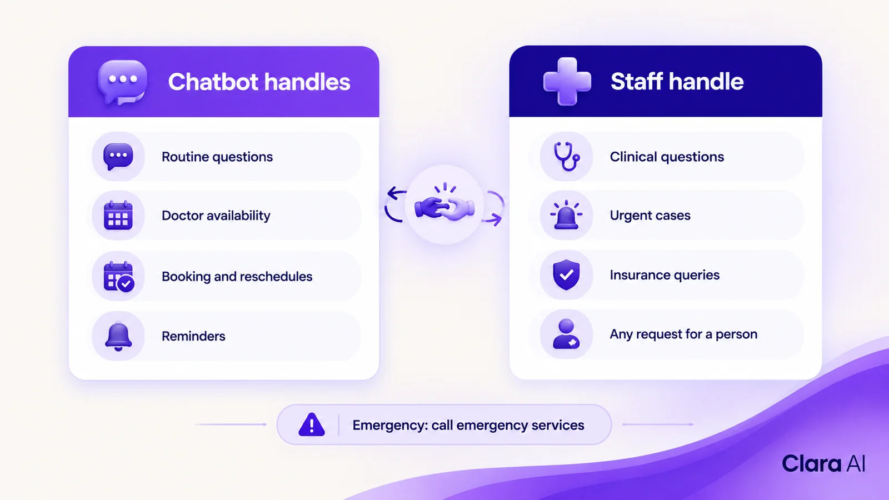
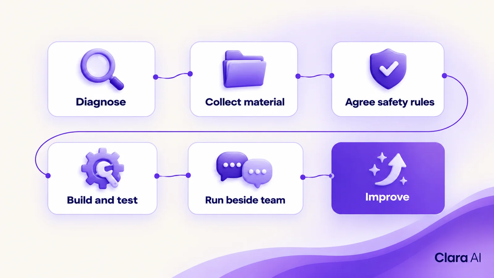

An AI chatbot for hospital appointment booking answers patients on WhatsApp and the website at any hour, checks doctor availability, books and reschedules visits, and sends reminders. It works in Arabic, English and Hindi. It never gives medical advice, and it hands clinical or urgent requests to staff with the full conversation.
It is late on a Wednesday night in Dubai. A father messages a hospital's WhatsApp number. His daughter needs a paediatrician this week, and he wants to know whether his insurer is accepted. The message waits for the call centre to open. By then he has written to another hospital, which replied within minutes and offered a slot.
Hospitals and clinic groups across Saudi Arabia and the UAE know this pattern. This article explains how an AI chatbot on WhatsApp and the website handles it, what it must never do, and where your staff stay in charge.
Appointment demand does not arrive in office hours. Patients write on WhatsApp in the evening, fill in website forms at the weekend and phone during the morning peak. The same few questions repeat all day.
Most requests are routine:
Each one is quick to answer, but together they fill the queue. Reschedules and unanswered calls add repeat calls. Staff who should be helping patients at the desk spend their time on the phone, and requests that arrive after hours wait until morning.
Language adds to the load. Patients write in Arabic, English or Hindi, and staff who speak all three are not always on shift.
A chatbot takes the routine work and leaves the rest to people. On WhatsApp and the website, it:

Both channels share the same answers, booking rules and record. A patient who writes on the website in the morning and on WhatsApp in the evening reaches the same assistant, working to the same rules.
Clara AI builds both: an AI web chatbot for your site and a WhatsApp chatbot for business for the channel many patients in the Gulf already use every day.
One WhatsApp rule shapes reminders. Under Meta's WhatsApp Business Platform rules, a business can reply freely for 24 hours after the patient's last message. After that, it can send only pre-approved template messages, so reminders and follow-ups are written as templates and approved in advance.
The table compares the two set-ups. It describes how the work is shared, not a promised result.
| Area | Call centre only | AI chatbot plus staff |
|---|---|---|
| After-hours requests | Wait until the centre opens | Answered straight away on WhatsApp and the website |
| Routine questions (location, insurers) | Handled by agents on calls | Answered by the chatbot from approved information |
| Doctor availability and booking | Agent checks the schedule on each call | Chatbot checks and books; staff step in for complex cases |
| Reschedules and cancellations | Repeat calls | Handled in the chat |
| Reminders | Manual calls or messages | Automatic, using approved templates on WhatsApp |
| Languages | Depends on who is on shift | Arabic, English and Hindi at all hours |
| Clinical or urgent questions | Agent or nurse | Handed to staff with the full chat |
| Where staff time goes | Mostly routine calls | Mostly patients who need a person |
The call centre does not disappear. It spends its time on the calls that need a person.
A hospital chatbot needs firm limits. Clara AI builds them in from the first day.
The handover is designed first, not added later. When a request is clinical, urgent, sensitive or outside the approved information, the chatbot passes it to a named team, such as the front desk, the insurance desk or a nurse line.

The staff member sees the whole conversation, so the patient does not repeat anything. Patients can ask for a person at any time. Your team also reads chat records regularly. Where the chatbot struggled, the source information or the rules are corrected.
Yes. Clara AI's chatbots and calling agents work in Arabic, English and Hindi. In the Gulf, many patients and staff move between all three, so the chatbot answers in the language the patient writes in.
Before launch, we test each language on real patient messages that your team shares, including how patients actually type on WhatsApp. Your staff check clinical wording, doctor names and department names.
Some patients prefer the phone. An AI calling agent can take after-hours calls in the same three languages, follow the same booking rules and write the outcome to the same record.
Health information is sensitive. We apply a few principles and agree the settings with your compliance team before launch.
Yes. Clara AI works with Apex Hospitals in India, where we run WhatsApp and call-audit work for the group. It shows that this kind of assistant already works inside a busy hospital operation, built and then managed by Clara AI after launch.
Every hospital is different, so a Gulf rollout starts with its own diagnosis: your channels, your languages, your scheduling system and your handover rules.
An operations intelligence dashboard sits behind the chatbot. It can show when requests arrive, which languages patients use, which questions the chatbot could not answer, how many chats went to staff and where patients drop out before booking.
Managers use it to staff the front desk at the right hours and to fix gaps in the information. You do not need all three services at once. Most hospitals start with the chatbot.
